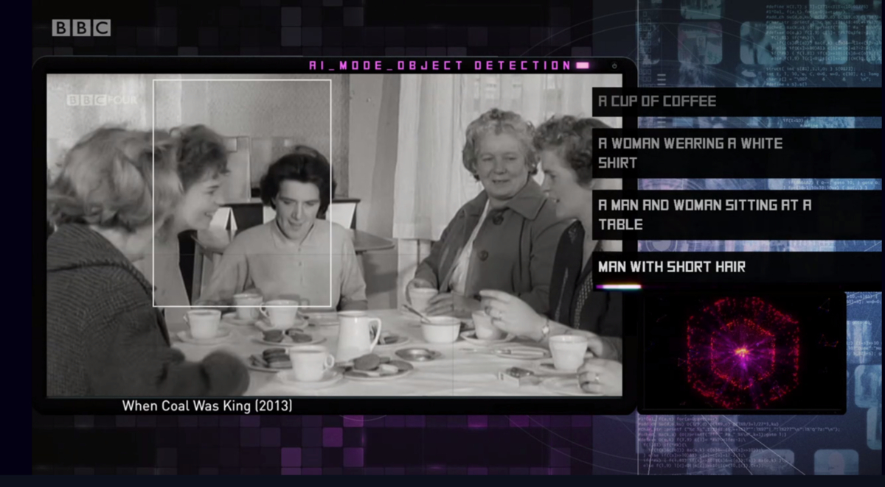

Made by Machine
- Website
- BBC R&D blog post
- On machine vision and photographic imagination - article by D. Chávez Heras and T. Blanke using MbM as a case study; Springer Nature AI & Society journal
Full name: “Made by Machine: When AI met the Archive”
Research, prototyping and software for this experimental TV documentary produced at BBC Research & Development in collaboration with BBC Four. Broadcast on BBC Four in September 2018.
We used several machine learning techniques including Densecap, word2vec and LSTM networks to analyse BBC archive material and built a “generative editor” system which produced sequences of clips traversing the various feature spaces.
